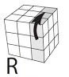
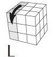
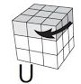
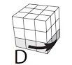
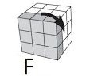
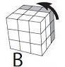

¿Qué es la notación?
La notación del cubo de Rubik es un sistema estandarizado de letras y símbolos que describe los movimientos que se pueden realizar en el cubo. Dado que el cubo de Rubik tiene seis caras, cada una se representa con una letra que indica su posición. Esta notación es fundamental para quienes aprenden a resolver el cubo, ya que facilita el seguimiento y comunicación de algoritmos de solución, desde los más básicos hasta los más avanzados.
¿Para que sirve?
La notación del cubo de Rubik sirve para describir y comunicar de manera precisa los movimientos necesarios para resolver el cubo. Es esencial para aprender, practicar y compartir algoritmos de solución, ya que permite entender los pasos específicos que se deben realizar para reorganizar las piezas del cubo en su estado resuelto. Entre los aspectos positivos de apredner notación, se encuentran diversos puntos a tener en cuenta:
- Estudio de algoritmos: Los algoritmos son secuencias de movimientos dadas previamente para resolver cierto caso especifico.
- Comunicación clara entre cuberos: Al ser un lenguaje estándar, la notación permite que los cuberos de todo el mundo compartan métodos y técnicas de resolución, sin ambigüedades.
- Competencias y torneos: En competiciones oficiales, como los campeonatos de Speedcubing, los jueces y participantes utilizan la notación para describir los algoritmos que se usarán durante los desafíos. Esto garantiza que todos los competidores entiendan los mismos movimientos y reglas.
- Documentación de distintos métodos: Los métodos avanzados de resolución, como el método CFOP (Cross, F2L, OLL, PLL), se basan completamente en la notación para describir las distintas fases de resolución. Al documentar estos métodos, la notación ayuda a organizarlos y presentarlos de manera que cualquier persona los pueda aprender.
Cómo aprender?
Cada una de las seis caras del cubo se identifica con una letra, basada en su posición cuando miras el cubo en una orientación fija:
R (Right): Cara derecha.

L (Left): Cara izquierda.

U (Up): Cara superior.
D (Down): Cara inferior.
F (Front): Cara frontal.
B (Back): Cara trasera.
Cada uno de estos casos, la cara se mueve en sentido horario, en caso de que en la notación, la letra tenga un ' (Significa "prima") va a tener un movimiento antihorario.
En caso de que una letra tenga "2", esa cara se moverá dos veces independientemente de la dirección.


Imagen de la primera competencia oficial organizada por la World Cube Association